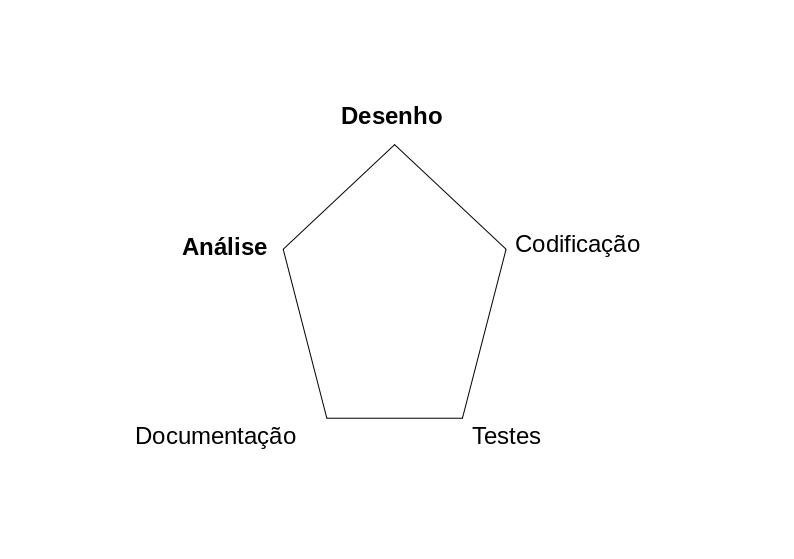
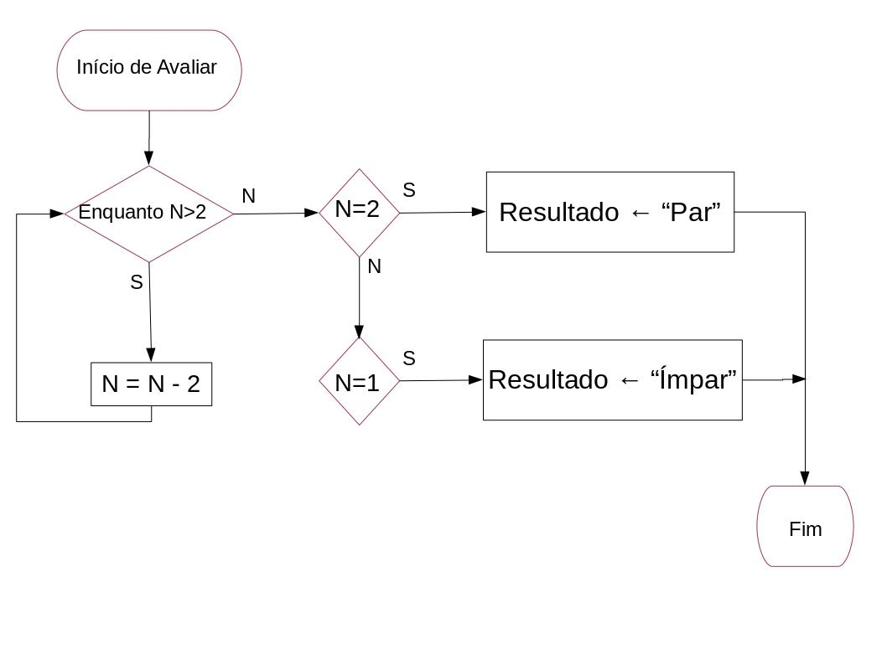

Criação de soluções¶
Hoje vamos ver algumas técnicas para criar soluções mais robustas, aproveitando para consolidar o que já vimos de programação.
Objetivos de aprendizagem¶
Vamos ver algumas técnicas usadas no processo de criação de soluções computacionais, nomeadamente:
Etapas para a criação de uma solução
Fluxogramas
Pseudo-código
documentação
asserções
Criação de uma solução computacional¶
Identificar o problema
Análise do problema
Formulação de um algoritmo para resolver o problema
Descrição do algoritmo de forma simples, eventualmente escrevendo o programa
Execução ou validação
Solução
A qualidade de uma solução computacional (6) está pois associada à escolha do algoritmo (3).
Algoritmo¶
Um algoritmo é uma sequência precisa de operações ou atividades que resolvem um problema num tempo finito.
Um programa (ou script) é a expressão de um algoritmo usando uma linguagem de programação.
Juntando tudo isto, na resolução de problemas, tradicionalmente identificavam-se as fases:
Fase de Análise: decidir o que temos que fazer.
Fase de Desenho (conceção de uma solução): decidir como se fará, é o desenvolvimento do algoritmo.
Uma abordagem popular é TOP-DOWN, onde um problema complexo se resolve dividindo o problema em subproblemas, e assim sucesivamente até que a resolução de um problema seja de fácil solução.
Caraterísticas desejáveis de um algoritmo¶
Terminar sempre
Concreto e sem ambiguidade
Simples e, se tiver várias etapas, com ordem de aplicação definida
Funcionar sempre, independentemente dos dados de entrada (eficaz)
Factível
Independente da linguagem de programação e plataforma de implementação
Fase de Codificação: a implementação do algoritmo numa linguagem de programação adequada.
Fase de Testes: não basta terminar o programa; há que garantir que o programa não falha e funciona para todos os casos possíveis.
Fase de Documentação: produzir a documentação do programa, facilitando a reutilização futura bem como eventuais alterações.
A abordagem que nós usamos na fase de análise é decompor o nosso problema:
em pequenas unidades, que identificamos com uma função, com nome mas vazia
descrevemos sucintamente o objetivo na documentação
esboçamos os testes para definir o que cada função deve fazer.
Como descrever soluções¶
Numa abordagem inicial, é frequente sugerir-se o uso de:
pseudocódigo para enunciar o algoritmo
diagramas de fluxo para visualização do algoritmo
Exemplo de pseudo-código¶
Paridade (número n)
Início:
Avaliar:
se n = 2
escreve "Par"
Vai para Fim
senão
se n = 1
escreve "Ímpar"
Vai para Fim
senão
n = n - 2
Vai para Avaliar
fim se
fim se
Fim: Termina
Exercícios propostos¶
Como faria (pseudo-código ou fluxograma) para:
Troca
Em \(a\) e \(b\) tenho duas quantidades em que \(a > b\). Pretendo garantir que \(a < b\).
Enumeração
Tenho uma coleção de elementos. Pretendo saber quantos elementos contém.
Tenho uma coleção de elementos. Pretendo examiná-los todos.
Acumulação
Tenho uma coleção de elementos. Pretendo o valor do somatório.
Ordenação
Tenho uma coleção de elementos. Pretendo que o conjunto fique ordenado crescentemente.
Procura
Tenho uma coleção de elementos. Pretendo saber se determinado elemento existe.
Codificação, testes e documentação¶
O conceito de programação imperativa (ou declarativa) é um estilo de programação em que a atividade de um computador é orientada por instruções.
Essas instruções traduzirão então as ordens a cumprir, seja ler, escrever, somar, repetir até entre outras.
Normalmente a programação imperativa deseja-se estruturada em atividades bem delimitadas, que se pretendem simples e pequenas (Keep it simple, keep it small).
Na programação estruturada tipicamente ocorre a leitura de dados, o processamento e a escrita de resultados. O processamento é organizado numa sequência de atividades, cada uma delas concretizada por pequenos conjuntos de instruções (procedimentos ou funções).
Exemplo: paridade¶
Como exemplo de um algoritmo, foi referido o teste de paridade de um número. No caso geral teríamos:
Exemplo de pseudo-código¶
Início:
Ler dados
Avaliar se é par
Escrever resultado
Fim: Termina
Ler os dados e escrever os resultados é normalmente o mais simples.
Ler dados:
pedir entrada
enquanto entrada inválida
pedir entrada
fim enquanto
Escrever resultado:
mostrar resultado
Avaliar a paridade pode ser feito de várias maneiras. Como tínhamos à pouco:
Avaliar:
se n = 2
resultado é "Par"
senão
se n = 1
resultado é "Ímpar"
senão
n = n - 2
Avaliar
fim se
E como implementamos a função avaliar? De forma recursiva ou iterativa?
A abordagem pretentida (iterativa ou recursiva) pode ficar clara na definição do algoritmo. Assim:
ou seja:
Avaliar:
enquanto n > 2
n = n - 2 < == iterativo
fim enquanto
se n = 2
resultado é "Par"
senão
resultado é "Ímpar"
fim se
Codificação e documentação¶
E como ficaria em Python?
Vamos incluir a documentação, usando uma docstring mais completa e garantindo a qualidade do bloco de código usando asserções (assert).
def paridade_2 (n):
""" Função que determina se um número natural positivo é par ou ímpar.
Argumento:
n (int): número a avaliar
Devolve:
str: "Par" ou "Ímpar"
Exemplos:
>>> paridade_2 (3)
'Ímpar'
>>> paridade_2 (4)
'Par'
"""
assert type(n) is int, "n não é um inteiro: %r" % n
assert n >0, "n não é maior que zero: %r" % n
while (n>2):
n = n-2
if (n == 2):
resultado = 'Par'
else:
resultado = 'Ímpar'
return resultado
paridade_2(5)
'Ímpar'
paridade_2(4)
'Par'
# Garantimos que a função não é usada de forma incorreta.
# paridade_2(5.0)
# Garantimos que a função não é usada de forma incorreta.
# paridade_2(-3)
help(paridade_2)
Help on function paridade_2 in module __main__:
paridade_2(n)
Função que determina se um número natural positivo é par ou ímpar.
Argumento:
n (int): número a avaliar
Devolve:
str: "Par" ou "Ímpar"
Exemplos:
>>> paridade_2 (3)
'Ímpar'
>>> paridade_2 (4)
'Par'
Note que o uso de asserções não dispensa a validação dos dados.
Quando uma asserção não se verifica, o programa termina de forma abrupta, em erro, e isso não é adequado.
Mas as funções que são feitas podem ser usados noutros contextos, que não o do programa inicial. O uso de asserções ajuda a criar soluções mais robustas, pois numa função podemos verificar que as condições necessárias para a sua utilização.
Alguns pontos curiosos¶
Efeitos colaterais¶
Porque criamos as funções, há que ter cuidado com as atividades das funções. Por exemplo,
Se em vez de um inteiro, desenhassemos a função para trabalhar com o primeiro elemento de uma lista de inteiros, usando a mesma abordagem …
def paridade_3 (n):
""" Função que determina se o primeiro elemento de uma lista
de números naturais positivos é par ou ímpar.
Argumento:
n (lista)
Devolve:
str: "Par" ou "Ímpar"
Exemplos:
>>>
>>> paridade_3 (3)
'Ímpar'
>>> paridade_3 (4)
'Par'
"""
assert type(n[0]) is int, "n não é um inteiro: %r" % n
assert n[0] > 0, "n não é maior que zero: %r" % n
while (n[0]>2):
n[0] = n[0]-2
if (n[0] == 2):
resultado = 'Par'
if (n[0] == 1):
resultado = 'Ímpar'
return resultado
# Muito importante!
n = 6
m = [6]
print (paridade_2(n), n)
print(paridade_3(m), m)
Par 6
Par [2]
Outros cuidados a ter¶
Não deve existir uma saída abrupta (return dentro do ciclo de controlo, p. exemplo).
Cada função deve ter apenas um return.
A aglutinação de operadores torna
o código mais compacto
menos legível
pode esconder eventuais efeitos colaterais
portanto deve ser usada com cuidado.
Exercício proposto¶
Inclua documentação e testes na função que fez para validar uma data na tarefa D do Lab4.